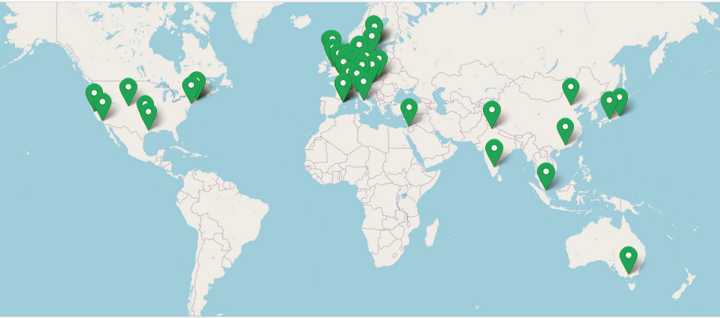
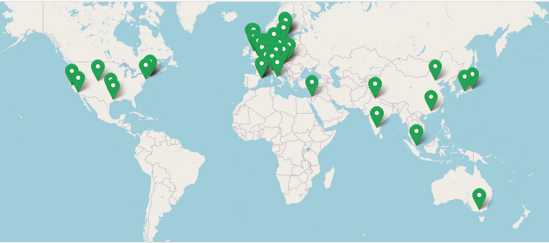

nf-core
Introduction to nf-core
nf-core is a community effort to collect a curated set of analysis pipelines built using Nextflow. As such nf-core is:
A community of users and developers.
A curated set of analysis pipelines build using Nextflow.
A set of guidelines (standard).
A set of helper tools.
Community
The nf-core community is a collaborative effort that has been growing since its creation in early 2018, as you can check on the nf-core stats site.
 

{kind=link}
Pipelines
Currently, there are 66 pipelines that are available as part of nf-core (37 released, 23 under development and 6 archived). You can browse all of them on this link.
Guidelines
All nf-core pipelines must meet a series of requirements or guidelines. These guidelines ensure that all nf-core pipelines follow the same standard and stick to current computational standards to achieve reproducibility, interoperability and portability. The guidelines are make available on this link.
Helper tools
To ease the use and development of nf-core pipelines, the community makes available a set of helper tools that we will introduce on this tutorial.
Paper
The main nf-core paper was published in 2020 in Nature Biotechnology and describes the community and the nf-core framework.
{kind=link}
Installation
You can use Conda to install nf-core tools. In the command below we create a new named environment that includes nf-core and then, we activate it.
conda create --name nf-core nf-core=2.4.1 -c bioconda -c conda-forge -y
conda activate nf-core
Note
You will need to install again Nextflow in the instances using curl -s https://get.nextflow.io | bash and move the
executable to sudo mv nextflow /usr/local/bin
Tip
Find alternative ways of installation on the nf-core documentation
We can now check the nf-core available commands:
$ nf-core -h
,--./,-.
___ __ __ __ ___ /,-._.--~\
|\ | |__ __ / ` / \ |__) |__ } {
| \| | \__, \__/ | \ |___ \`-._,-`-,
`._,._,'
nf-core/tools version 2.4.1 - https://nf-co.re
Usage: nf-core [OPTIONS] COMMAND [ARGS]...
nf-core/tools provides a set of helper tools for use with nf-core Nextflow pipelines.
It is designed for both end-users running pipelines and also developers creating new pipelines.
╭─ Options ────────────────────────────────────────────────────────────────────────────────────────╮
│ --version Show the version and exit. │
│ --verbose -v Print verbose output to the console. │
│ --log-file -l <filename> Save a verbose log to a file. │
│ --help -h Show this message and exit. │
╰──────────────────────────────────────────────────────────────────────────────────────────────────╯
╭─ Commands for users ─────────────────────────────────────────────────────────────────────────────╮
│ list List available nf-core pipelines with local info. │
│ launch Launch a pipeline using a web GUI or command line prompts. │
│ download Download a pipeline, nf-core/configs and pipeline singularity images. │
│ licences List software licences for a given workflow. │
╰──────────────────────────────────────────────────────────────────────────────────────────────────╯
╭─ Commands for developers ────────────────────────────────────────────────────────────────────────╮
│ create Create a new pipeline using the nf-core template. │
│ lint Check pipeline code against nf-core guidelines. │
│ modules Commands to manage Nextflow DSL2 modules (tool wrappers). │
│ schema Suite of tools for developers to manage pipeline schema. │
│ bump-version Update nf-core pipeline version number. │
│ sync Sync a pipeline TEMPLATE branch with the nf-core template. │
╰──────────────────────────────────────────────────────────────────────────────────────────────────╯
As shown in the screenshot, nf-core tools provides with some commands meant for users and with some commands meant for developers. We will start first discussing how nf-core can be used from a user point of view.
nf-core for users
Listing pipelines
To show all the nf-core available pipelines, we can use the nf-core list command. This command also provides some other information as the last version of each of the nf-core pipelines, its publication and and when you last pulled the pipeline to your local system.
$ nf-core list
,--./,-.
___ __ __ __ ___ /,-._.--~\
|\ | |__ __ / ` / \ |__) |__ } {
| \| | \__, \__/ | \ |___ \`-._,-`-,
`._,._,'
nf-core/tools version 2.4.1 - https://nf-co.re
┏━━━━━━━━━━━━━━━━━━━━━━━━┳━━━━━━━┳━━━━━━━━━━━━━━━━┳━━━━━━━━━━━━━━━┳━━━━━━━━━━━━━━┳━━━━━━━━━━━━━━━━━━━━━━┓
┃ Pipeline Name ┃ Stars ┃ Latest Release ┃ Released ┃ Last Pulled ┃ Have latest release? ┃
┡━━━━━━━━━━━━━━━━━━━━━━━━╇━━━━━━━╇━━━━━━━━━━━━━━━━╇━━━━━━━━━━━━━━━╇━━━━━━━━━━━━━━╇━━━━━━━━━━━━━━━━━━━━━━┩
│ airrflow │ 19 │ 2.2.0 │ 2 days ago │ - │ - │
│ circdna │ 4 │ 1.0.0 │ 5 days ago │ - │ - │
│ smrnaseq │ 39 │ 2.0.0 │ 5 days ago │ 7 months ago │ No (v1.1.0) │
│ rnaseq │ 465 │ 3.8.1 │ 1 weeks ago │ 6 days ago │ Yes (v3.8.1) │
│ ampliseq │ 88 │ 2.3.2 │ 1 weeks ago │ - │ - │
│ mnaseseq │ 7 │ 1.0.0 │ 2 weeks ago │ - │ - │
│ rnafusion │ 71 │ 2.0.0 │ 3 weeks ago │ - │ - │
│ fetchngs │ 58 │ 1.6 │ 3 weeks ago │ 2 weeks ago │ No (v1.5) │
│ atacseq │ 107 │ 1.2.2 │ 3 weeks ago │ 2 weeks ago │ Yes (v1.2.2) │
│ mhcquant │ 19 │ 2.3.1 │ 4 weeks ago │ - │ - │
│ hicar │ 2 │ 1.0.0 │ 1 months ago │ - │ - │
│ quantms │ 1 │ 1.0 │ 1 months ago │ - │ - │
│ eager │ 66 │ 2.4.4 │ 2 months ago │ - │ - │
│ viralrecon │ 70 │ 2.4.1 │ 3 months ago │ 7 months ago │ No (v2.2) │
│ cutandrun │ 27 │ 1.1 │ 5 months ago │ - │ - │
│ epitopeprediction │ 18 │ 2.0.0 │ 6 months ago │ - │ - │
│ nanoseq │ 76 │ 2.0.1 │ 6 months ago │ - │ - │
│ mag │ 88 │ 2.1.1 │ 6 months ago │ - │ - │
│ bacass │ 35 │ 2.0.0 │ 9 months ago │ - │ - │
│ bactmap │ 29 │ 1.0.0 │ 12 months ago │ - │ - │
│ sarek │ 168 │ 2.7.1 │ 12 months ago │ 2 months ago │ Yes (v2.7.1) │
[..truncated..]
Tip
The pipelines can be sorted by latest release (-s release, default), by the last time you pulled a local copy
(-s pulled), alphabetically (-s name) or by the number of GitHub stars (-s stars).
Filtering available nf-core pipelines
It is also possible to use keywords after the list command so that the list of pipelines is shortened to those
matching the keywords or including them in the description. We can use the command below to filter on the rna
and rna-seq keywords:
$ nf-core list rna rna-seq
,--./,-.
___ __ __ __ ___ /,-._.--~\
|\ | |__ __ / ` / \ |__) |__ } {
| \| | \__, \__/ | \ |___ \`-._,-`-,
`._,._,'
nf-core/tools version 2.4.1 - https://nf-co.re
┏━━━━━━━━━━━━━━━━━━━━━━━━┳━━━━━━━┳━━━━━━━━━━━━━━━━┳━━━━━━━━━━━━━┳━━━━━━━━━━━━━━┳━━━━━━━━━━━━━━━━━━━━━━┓
┃ Pipeline Name ┃ Stars ┃ Latest Release ┃ Released ┃ Last Pulled ┃ Have latest release? ┃
┡━━━━━━━━━━━━━━━━━━━━━━━━╇━━━━━━━╇━━━━━━━━━━━━━━━━╇━━━━━━━━━━━━━╇━━━━━━━━━━━━━━╇━━━━━━━━━━━━━━━━━━━━━━┩
│ smrnaseq │ 39 │ 2.0.0 │ 5 days ago │ 7 months ago │ No (v1.1.0) │
│ rnaseq │ 465 │ 3.8.1 │ 1 weeks ago │ 6 days ago │ Yes (v3.8.1) │
│ rnafusion │ 71 │ 2.0.0 │ 3 weeks ago │ - │ - │
│ dualrnaseq │ 7 │ 1.0.0 │ 1 years ago │ - │ - │
│ circrna │ 18 │ dev │ - │ - │ - │
│ lncpipe │ 23 │ dev │ - │ - │ - │
│ scflow │ 12 │ dev │ - │ - │ - │
│ spatialtranscriptomics │ 3 │ dev │ - │ - │ - │
└────────────────────────┴───────┴────────────────┴─────────────┴──────────────┴──────────────────────┘
Pulling pipelines
Once we have identified the nf-core pipeline we want to use we can pull it using the Nextflow built-in functionality.
nextflow pull nf-core/<PIPELINE>
Tip
Nextflow will also automatically pull a project if you use nextflow run nf-core/<PIPELINE>
Launching pipelines
The launch command enables to launch nf-core, and also Nextflow, pipelines via a web-based graphical interface or an
interactive command-line wizard tool. This command becomes handy for pipelines with a considerable number of parameters
since it displays the documentation alongside each of the parameters and validate your inputs.
We can now launch an nf-core pipeline:
nf-core launch
Note
The pipelines can be sorted by latest release (-s release, default), by the last time you pulled a local copy
(-s pulled), alphabetically (-s name) or by the number of GitHub stars (-s stars).
To render the description of the parameters, its grouping and defaults, the tool uses the nextflow_schema.json. This
JSON file is bundled with the pipeline and includes all the information mentioned above, see an example here.
The chosen not default parameters are dumped into a JSON file called nf-params.json. This file can be provided to new
executions using the -params-file flag. See below an example:
{
"outdir": "results",
"input": "https://raw.githubusercontent.com/nf-core/test-datasets/rnaseq/samplesheet/v3.4/samplesheet_test.csv"
}
It is a good practice in terms of reproducibility to explicitly indicate the version (revision) of the pipeline that
you want to use, this can be indicated using the -r flag e.g. nf-core launch rnaseq -r 3.8.1.
Exercise
Pull version 3.8.1 of the nf-core/rnaseq pipeline, run it using the nf-core launch command and produce the nf-params.json.
Solution
nextflow pull nf-core/rnaseq -r 3.8.1
nf-core launch rnaseq -r 3.8.1
nf-core configs and profiles
nf-core configs
We have already introduced Nextflow configuration files and profiles during the course. Config files are used by nf-core pipelines to specify the computational requirements of the pipeline, define custom parameters and set which software management system to be used (Docker, Singularity or Conda). As an example take a look to the base.config that is used to set sensible defaults for the computational resources needed by the pipeline.
nf-core core profiles
nf-core pipelines use profiles to bundle a set of configuration attributes. By doing so, we can activate these
attributes by using the -profile Nextflow command line option. All nf-core pipelines come along with a set of common
“Core profiles” that include the conda, docker and singularity that define which software manager to use and the
test profile that specifies a minimal test dataset to check that the pipelines works properly.
Note
Each configuration file can include one or several profiles
Institutional profiles
Institutional profiles are profiles where you can specify the configuration attributes for your institution system. They are
hosted in https://github.com/nf-core/configs and all pipelines pull this repository when a pipeline is run. The idea is that
these profiles set the custom config attributes to run nf-core pipelines in your institution (scheduler, container technology,
resources, etc.). This way all the users in a cluster can make use of the profile just setting the profile of your institution
(-profile institution).
Tip
You can use more than profile at a time by separating them by a comma without space, e.g. -profile test,docker
Custom config
If you need to provide any custom parameter or setting when running a nf-core pipeline, you can do it by creating a local custom
config file and add it to your command with the -c flag.

*Image from https://carpentries-incubator.github.io/workflows-nextflow.
Note
Profiles will be prioritized from left to right in case conflicting settings are found.
Exercise
Create a custom config that sets
params.emailto your email address and try to run the pipeline.
Solution
echo 'params.email = "youremail@address.com"' > mycustom.config
nextflow run nf-core/rnaseq -r 3.8.1 -profile test,docker -c mycustom.config --outdir results
Create a custom config that sets the process cpus to 2 and the memory to 8 Gb.
Solution
params {
max_cpus = 2
max_memory = '8.GB'
}
Running pipelines with test data
All nf-core pipelines include a special configuration named test. This configuration defines all the files and parameters to test
all pipeline functionality with a minimal dataset. Thus, although the functionality of the pipeline is maintained often the results
are not meaningful. As an example, find on the snippet below the test configuration of the nf-core/rnaseq.
pipeline.
/*
~~~~~~~~~~~~~~~~~~~~~~~~~~~~~~~~~~~~~~~~~~~~~~~~~~~~~~~~~~~~~~~~~~~~~~~~~~~~~~~~~~~~~~~~
Nextflow config file for running minimal tests
~~~~~~~~~~~~~~~~~~~~~~~~~~~~~~~~~~~~~~~~~~~~~~~~~~~~~~~~~~~~~~~~~~~~~~~~~~~~~~~~~~~~~~~~
Defines input files and everything required to run a fast and simple pipeline test.
Use as follows:
nextflow run nf-core/rnaseq -profile test,<docker/singularity> --outdir <OUTDIR>
----------------------------------------------------------------------------------------
*/
params {
config_profile_name = 'Test profile'
config_profile_description = 'Minimal test dataset to check pipeline function'
// Limit resources so that this can run on GitHub Actions
max_cpus = 2
max_memory = '6.GB'
max_time = '6.h'
// Input data
input = 'https://raw.githubusercontent.com/nf-core/test-datasets/rnaseq/samplesheet/v3.4/samplesheet_test.csv'
// Genome references
fasta = 'https://github.com/nf-core/test-datasets/raw/rnaseq/reference/genome.fasta'
gtf = 'https://github.com/nf-core/test-datasets/raw/rnaseq/reference/genes.gtf.gz'
gff = 'https://github.com/nf-core/test-datasets/raw/rnaseq/reference/genes.gff.gz'
transcript_fasta = 'https://github.com/nf-core/test-datasets/raw/rnaseq/reference/transcriptome.fasta'
additional_fasta = 'https://github.com/nf-core/test-datasets/raw/rnaseq/reference/gfp.fa.gz'
bbsplit_fasta_list = 'https://github.com/nf-core/test-datasets/raw/rnaseq/reference/bbsplit_fasta_list.txt'
hisat2_index = 'https://github.com/nf-core/test-datasets/raw/rnaseq/reference/hisat2.tar.gz'
salmon_index = 'https://github.com/nf-core/test-datasets/raw/rnaseq/reference/salmon.tar.gz'
rsem_index = 'https://github.com/nf-core/test-datasets/raw/rnaseq/reference/rsem.tar.gz'
// Other parameters
skip_bbsplit = false
pseudo_aligner = 'salmon'
umitools_bc_pattern = 'NNNN'
}
// When using RSEM, remove warning from STAR whilst building tiny indices
process {
withName: 'RSEM_PREPAREREFERENCE_GENOME' {
ext.args2 = "--genomeSAindexNbases 7"
}
}
Tip
You can find the current version of the above config above here
Downloading pipelines
If your HPC system or server does not have an internet connection you can still run nf-core pipelines by fetching the pipeline files first and then, manually transferring them to your system.
The nf-core download option simplifies this process and ensures the correct versioning of all the code and containers
needed to run the pipeline. By default, the command will download the pipeline code and the institutional nf-core/configs
files. Again, the -r flag allows to fetch a given revision of the pipeline.
Finally, you can also download any singularity image files required by the pipeline, if you specify the --singularity flag.
Tip
If you don’t provide any option to `nf-core download an interactive prompt will ask you for the required options.
We can now try to download the rnaseq pipeline using the command below:
nf-core download rnaseq
Now we can inspect the structure of the downloaded directory:
$ tree -L 2 nf-core-rnaseq-3.8.1/
nf-core-rnaseq-3.8.1/
├── configs
│ ├── ..truncated..
│ ├── nextflow.config
│ ├── nfcore_custom.config
│ └── pipeline
├── singularity-images
│ ├── depot.galaxyproject.org-singularity-bbmap-38.93--he522d1c_0.img
│ ├── ..truncated..
│ └── depot.galaxyproject.org-singularity-umi_tools-1.1.2--py38h4a8c8d9_0.img
└── workflow
├── CHANGELOG.md
├── ..truncated..
├── main.nf
├── modules
└── workflows
Pipeline output
nf-core pipelines produce a MultiQC report which summarises results at the end of the execution along with software versions of the different tools used, nf-core pipeline version and Nextflow version itself.
Each pipeline provides an example of a MultiQC report from a real execution in the nf-core website. For instance you can find the report corresponding to the current version of nf-core/rnaseq here.
nf-core for developers
nf-core tools provide with a bunch of helper commands targeted to help developers implement pipelines following nf-core guidelines. You can use them to contribute to the nf-core repository or use them to implement your own pipelines following nf-core standards.
Creating pipelines
The nf-core create command generates a pipeline based on the nf-core template. During the process you will need to provide some
information as the pipeline name, description and author name either using the flags or answering the questions in the interactive prompt.
With this information, the pipeline will be initialized following the nf-core standards.
Besides creating the files, the command initializes the folder containing the new pipeline as a git repository and makes and initial commit. This first commit is identical to the nf-core template and it is important since it enables to keep your pipeline in sync with the nf-core template when it is updated (new tool releases).
Exercise
Try to create your own pipeline using nf-core create
Solution
nf-core create -n "toy" -d "My awesome nf-core pipeline" -a "Your name"
Note
As shown in the message returned by the nf-core create if you plan to contribute your pipeline to nf-core, it is
highly advisable to drop a message on the nf-core before starting to write any code, read more here
Linting pipelines
To make sticking to nf-core guidelines easier, nf-core includes the lint command. This command checks that the pipeline
is following some of the nf-core standards. Interestingly, the command is the same that is used in the automated continuous
integration tests.
Let’s try to run this command on the pipeline we have just created.
cd nf-core-<your_pipeline_name>
nf-core lint
Tip
You can use ctrl + click to navigate the documentation of each of the lint results. Otherwise, the complete list of the lint tests can be found here.
To run only a specific nf-core lint test you can use the -k / --key option, this enables to run for example
only a certain test that has failed, e.g. nf-core lint -k files_exist -k files_unchanged.
nf-core schema
As we discussed before, nf-core pipelines include a nextflow_schema.json that it is used to describe the parameters
of the pipelines and validate them when provided as input. Since the creation of this file could be very error prompt,
nf-core tools provide with a command to create build, validate and lint the nextflow_schema.json.
We will see an example of how to use this command on the final exercise.
Note
You can find more documentation about the nf-core schema on the nf-core website.
nf-core modules
Since the introduction of Nextflow DSL2, nf-core pipelines have, and still are, been ported to DSL2 syntax. One of the paramount features of the DSL2 syntax is the possibility of creating modules and sub-workflows, as we have already discussed during this course. For this reason, the nf-core community has created a centralised repository to host modules and sub-workflows (the latter is still WIP). This enables multiple pipelines to use the same process defined as a module improving the developing speed and the robustness of pipelines by using tested modules.
nf-core DSL2 concepts
MODULE: A process that can be used within different pipelines and is as a atomic as possible i.e, cannot be split into another module. e.g. a module file containing the process definition for a single tool such as FastQC
SUB-WORKFLOW: A chain of multiple modules that offer a higher-level functionality within the context of a pipeline. e.g. a sub-workflow to sort, index and run some basic stats on a BAM file.
WORKFLOW: An end-to-end pipeline created by a combination of Nextflow DSL2 individual modules and sub-workflows. e.g. from one or more inputs to a series of final inputs
The nf-core DSL2 modules repository is at https://github.com/nf-core/modules and you can navigate the modules available on this section of the nf-core website.
Note
We have recently reach 500 modules available in the modules repository.
As you can see, modules have become a central resource of the nf-core community and as so nf-core tools provides with some dedicated utilities for modules.
Listing modules
We can now list all the nf-core available modules getting advantage of the list remote sub-command.
$ nf-core modules list remote
,--./,-.
___ __ __ __ ___ /,-._.--~\
|\ | |__ __ / ` / \ |__) |__ } {
| \| | \__, \__/ | \ |___ \`-._,-`-,
`._,._,'
nf-core/tools version 2.4.1 - https://nf-co.re
INFO Modules available from nf-core/modules (master): list.py:125
┏━━━━━━━━━━━━━━━━━━━━━━━━━━━━━━━━━━━━━━━━━━┓
┃ Module Name ┃
┡━━━━━━━━━━━━━━━━━━━━━━━━━━━━━━━━━━━━━━━━━━┩
│ abacas │
│ abricate/run │
│ abricate/summary │
│ adapterremoval │
│ adapterremovalfixprefix │
│ agrvate │
│ allelecounter │
│ amplify/predict │
│ amps │
│ amrfinderplus/run │
│ amrfinderplus/update │
│ antismash/antismashlite │
│ antismash/antismashlitedownloaddatabases │
│ arriba │
│ artic/guppyplex │
│ artic/minion │
│ ascat │
│ assemblyscan │
│ ataqv/ataqv │
│ bakta │
│ bamaligncleaner │
│ bamcmp │
│ bamtools/convert │
[..truncated..]
Tip
You can add a pattern to the end of the list command to filter the modules by keyword eg: nf-core modules list remote samtools
Likewise, it is also possible to list the modules installed in a pipeline by using the list local sub-command. By default,
the command will list the modules installed in the current working directory but you can provide a different directory by using
the --dir <pipeline_dir> option.
nf-core modules list local
Showing information about a module
You can render the basic information of a module using nf-core modules info <tool>. This command will provide a brief
summary of the module functionality, the description of the input and output channels, its type (val, path, etc.)
and the its installation command.
nf-core modules info fastqc
Tip
If you prefer, you can also check the modules documentation in the nf-core website.
Installing modules in a pipeline
You can use nf-core tools to install a module in any pipeline. The only requirement is that the directory contains a
main.nf a nextflow.config and a modules directory where the module will be installed.
Exercise
Create a folder with an empty
main.nf,nextflow.configand amodulesdirectory and try to install a module,
e.g. samtools/sort.
Removing modules from a pipeline
In the same manner, we can delete a module from a pipeline by using:
nf-core modules remove samtools/sort
Creating modules
The nf-core modules create command for modules is the equivalent to the nf-core create command for pipelines and
similarly uses the modules template to generate a module following nf-core guidelines.
You can use this command both to create local modules for a pipeline or to create modules for the nf-core modules
repository. The command can detect on which type of repository you are working thanks to the .nf-core.yml file that sets the type of repository using the
repository_type tag.
Note
If you want to make available a module in nf-core/modules to the whole Nextflow community you can find the reference
documentation here and a step by step tutorial
on this link.
Exercise
Place yourself in the nf-core-toy pipeline we created before and try to install the same module.
Other commands for developing nf-core modules
Lint modules
As for pipelines, nf-core tools provides a command to lint the modules against nf-core guidelines.
nf-core modules lint
Create unit test
nf-core modules have the requirement of being unit tested using a minimal test data. These tests are run using pytest and can be automatically generated using the command below:
nf-core modules create-test-yml
Note
You can find more info about the create-test-yml command here.
Run module test using pytest
Also, it is possible to run the unit test of a module using the nf-core modules test command using again pytest.
To run the test for a given module (e.g. fastqc) you can use:
nf-core modules test fastqc
Tip
To run the modules unit test you need to install pytest first.
Note
Further documenation nf-core modules test can be found on this link.
Bump bioconda and containers versions of a module tool
To ease the update of the modules installed in a pipeline, nf-core provides with the nf-core modules bump-versions
command. It is possible to both update a single or all modules in a pipeline. Also, this command can be used when contributing
to the nf-core modules repository to update the versions of modules upon release in Bioconda. The typical bump-versions
command looks like:
nf-core modules bump-versions
Note
Find the whole documenation of the nf-core modules bump-versions command here.
Generate the name of a mulled container
Biocontainers offer the possibility of generating what is known as mulled containers and that consist of multi-tool containers
generated by combinating a given version of single tool and adding them to the hash.tsv
of the Biocontainers multi-package-containers repository. This command generates the name of a BioContainers mulled image,
even if it does not exist, using the command below:
$ nf-core modules mulled bowtie2==2.4.4 samtools==1.15.1 pigz==2.6
,--./,-.
___ __ __ __ ___ /,-._.--~\
|\ | |__ __ / ` / \ |__) |__ } {
| \| | \__, \__/ | \ |___ \`-._,-`-,
`._,._,'
nf-core/tools version 2.4.1 - https://nf-co.re
INFO Found docker image on quay.io! ✨ mulled.py:68
INFO Mulled container hash: __main__.py:717
mulled-v2-ac74a7f02cebcfcc07d8e8d1d750af9c83b4d45a:1744f68fe955578c63054b55309e05b41c37a80d-0
Note
The above mulled container is used in the bowtie2/align module, see here
Exercise
Create or use the previous toy nf-core pipeline
Install the
adapterremovalmoduleUse the
adapterremovalmodule in thetoy.nfscript.Add a parameter to make the call of
adapterremovaloptional (skip_adapterremoval) in thenextflow.configand implement the code to make the call of the process inrna.toycontrolled by the parameter, see here for an example.Lint the pipeline.
Fix the linting by using the
nf-core schema buildcommand.Modify the arguments pass to the
fastqcmodule by creating a custom config, see./conf/modules.configfor inspiration.
Solution
/*
~~~~~~~~~~~~~~~~~~~~~~~~~~~~~~~~~~~~~~~~~~~~~~~~~~~~~~~~~~~~~~~~~~~~~~~~~~~~~~~~~~~~~~~~
VALIDATE INPUTS
~~~~~~~~~~~~~~~~~~~~~~~~~~~~~~~~~~~~~~~~~~~~~~~~~~~~~~~~~~~~~~~~~~~~~~~~~~~~~~~~~~~~~~~~
*/
def summary_params = NfcoreSchema.paramsSummaryMap(workflow, params)
// Validate input parameters
WorkflowToy.initialise(params, log)
// Check input path parameters to see if they exist
def checkPathParamList = [ params.input, params.multiqc_config, params.fasta ]
for (param in checkPathParamList) { if (param) { file(param, checkIfExists: true) } }
// Check mandatory parameters
if (params.input) { ch_input = file(params.input) } else { exit 1, 'Input samplesheet not specified!' }
/*
~~~~~~~~~~~~~~~~~~~~~~~~~~~~~~~~~~~~~~~~~~~~~~~~~~~~~~~~~~~~~~~~~~~~~~~~~~~~~~~~~~~~~~~~
CONFIG FILES
~~~~~~~~~~~~~~~~~~~~~~~~~~~~~~~~~~~~~~~~~~~~~~~~~~~~~~~~~~~~~~~~~~~~~~~~~~~~~~~~~~~~~~~~
*/
ch_multiqc_config = file("$projectDir/assets/multiqc_config.yml", checkIfExists: true)
ch_multiqc_custom_config = params.multiqc_config ? Channel.fromPath(params.multiqc_config) : Channel.empty()
/*
~~~~~~~~~~~~~~~~~~~~~~~~~~~~~~~~~~~~~~~~~~~~~~~~~~~~~~~~~~~~~~~~~~~~~~~~~~~~~~~~~~~~~~~~
IMPORT LOCAL MODULES/SUBWORKFLOWS
~~~~~~~~~~~~~~~~~~~~~~~~~~~~~~~~~~~~~~~~~~~~~~~~~~~~~~~~~~~~~~~~~~~~~~~~~~~~~~~~~~~~~~~~
*/
//
// SUBWORKFLOW: Consisting of a mix of local and nf-core/modules
//
include { INPUT_CHECK } from '../subworkflows/local/input_check'
/*
~~~~~~~~~~~~~~~~~~~~~~~~~~~~~~~~~~~~~~~~~~~~~~~~~~~~~~~~~~~~~~~~~~~~~~~~~~~~~~~~~~~~~~~~
IMPORT NF-CORE MODULES/SUBWORKFLOWS
~~~~~~~~~~~~~~~~~~~~~~~~~~~~~~~~~~~~~~~~~~~~~~~~~~~~~~~~~~~~~~~~~~~~~~~~~~~~~~~~~~~~~~~~
*/
//
// MODULE: Installed directly from nf-core/modules
//
include { FASTQC } from '../modules/nf-core/modules/fastqc/main'
include { MULTIQC } from '../modules/nf-core/modules/multiqc/main'
include { CUSTOM_DUMPSOFTWAREVERSIONS } from '../modules/nf-core/modules/custom/dumpsoftwareversions/main'
include { ADAPTERREMOVAL } from '../modules/nf-core/modules/adapterremoval/main'
/*
~~~~~~~~~~~~~~~~~~~~~~~~~~~~~~~~~~~~~~~~~~~~~~~~~~~~~~~~~~~~~~~~~~~~~~~~~~~~~~~~~~~~~~~~
RUN MAIN WORKFLOW
~~~~~~~~~~~~~~~~~~~~~~~~~~~~~~~~~~~~~~~~~~~~~~~~~~~~~~~~~~~~~~~~~~~~~~~~~~~~~~~~~~~~~~~~
*/
// Info required for completion email and summary
def multiqc_report = []
workflow TOY {
ch_versions = Channel.empty()
//
// SUBWORKFLOW: Read in samplesheet, validate and stage input files
//
INPUT_CHECK (
ch_input
)
ch_versions = ch_versions.mix(INPUT_CHECK.out.versions)
//
// MODULE: Run FastQC
//
FASTQC (
INPUT_CHECK.out.reads
)
ch_versions = ch_versions.mix(FASTQC.out.versions.first())
if (!params.skip_adapterremoval) {
ADAPTERREMOVAL (
INPUT_CHECK.out.reads,
[]
)
}
CUSTOM_DUMPSOFTWAREVERSIONS (
ch_versions.unique().collectFile(name: 'collated_versions.yml')
)
//
// MODULE: MultiQC
//
workflow_summary = WorkflowToy.paramsSummaryMultiqc(workflow, summary_params)
ch_workflow_summary = Channel.value(workflow_summary)
ch_multiqc_files = Channel.empty()
ch_multiqc_files = ch_multiqc_files.mix(Channel.from(ch_multiqc_config))
ch_multiqc_files = ch_multiqc_files.mix(ch_multiqc_custom_config.collect().ifEmpty([]))
ch_multiqc_files = ch_multiqc_files.mix(ch_workflow_summary.collectFile(name: 'workflow_summary_mqc.yaml'))
ch_multiqc_files = ch_multiqc_files.mix(CUSTOM_DUMPSOFTWAREVERSIONS.out.mqc_yml.collect())
ch_multiqc_files = ch_multiqc_files.mix(FASTQC.out.zip.collect{it[1]}.ifEmpty([]))
MULTIQC (
ch_multiqc_files.collect()
)
multiqc_report = MULTIQC.out.report.toList()
ch_versions = ch_versions.mix(MULTIQC.out.versions)
}
/*
~~~~~~~~~~~~~~~~~~~~~~~~~~~~~~~~~~~~~~~~~~~~~~~~~~~~~~~~~~~~~~~~~~~~~~~~~~~~~~~~~~~~~~~~
COMPLETION EMAIL AND SUMMARY
~~~~~~~~~~~~~~~~~~~~~~~~~~~~~~~~~~~~~~~~~~~~~~~~~~~~~~~~~~~~~~~~~~~~~~~~~~~~~~~~~~~~~~~~
*/
workflow.onComplete {
if (params.email || params.email_on_fail) {
NfcoreTemplate.email(workflow, params, summary_params, projectDir, log, multiqc_report)
}
NfcoreTemplate.summary(workflow, params, log)
}
/*
~~~~~~~~~~~~~~~~~~~~~~~~~~~~~~~~~~~~~~~~~~~~~~~~~~~~~~~~~~~~~~~~~~~~~~~~~~~~~~~~~~~~~~~~
THE END
~~~~~~~~~~~~~~~~~~~~~~~~~~~~~~~~~~~~~~~~~~~~~~~~~~~~~~~~~~~~~~~~~~~~~~~~~~~~~~~~~~~~~~~~
*/
{
"$schema": "http://json-schema.org/draft-07/schema",
"$id": "https://raw.githubusercontent.com/nf-core/toy/master/nextflow_schema.json",
"title": "nf-core/toy pipeline parameters",
"description": "My awesome nf-core pipeline",
"type": "object",
"definitions": {
"input_output_options": {
"title": "Input/output options",
"type": "object",
"fa_icon": "fas fa-terminal",
"description": "Define where the pipeline should find input data and save output data.",
"required": [
"input",
"outdir"
],
"properties": {
"input": {
"type": "string",
"format": "file-path",
"mimetype": "text/csv",
"pattern": "^\\S+\\.csv$",
"schema": "assets/schema_input.json",
"description": "Path to comma-separated file containing information about the samples in the experiment.",
"help_text": "You will need to create a design file with information about the samples in your experiment before running the pipeline. Use this parameter to specify its location. It has to be a comma-separated file with 3 columns, and a header row. See [usage docs](https://nf-co.re/toy/usage#samplesheet-input).",
"fa_icon": "fas fa-file-csv"
},
"outdir": {
"type": "string",
"format": "directory-path",
"description": "The output directory where the results will be saved. You have to use absolute paths to storage on Cloud infrastructure.",
"fa_icon": "fas fa-folder-open"
},
"email": {
"type": "string",
"description": "Email address for completion summary.",
"fa_icon": "fas fa-envelope",
"help_text": "Set this parameter to your e-mail address to get a summary e-mail with details of the run sent to you when the workflow exits. If set in your user config file (`~/.nextflow/config`) then you don't need to specify this on the command line for every run.",
"pattern": "^([a-zA-Z0-9_\\-\\.]+)@([a-zA-Z0-9_\\-\\.]+)\\.([a-zA-Z]{2,5})$"
},
"multiqc_title": {
"type": "string",
"description": "MultiQC report title. Printed as page header, used for filename if not otherwise specified.",
"fa_icon": "fas fa-file-signature"
}
}
},
"reference_genome_options": {
"title": "Reference genome options",
"type": "object",
"fa_icon": "fas fa-dna",
"description": "Reference genome related files and options required for the workflow.",
"properties": {
"genome": {
"type": "string",
"description": "Name of iGenomes reference.",
"fa_icon": "fas fa-book",
"help_text": "If using a reference genome configured in the pipeline using iGenomes, use this parameter to give the ID for the reference. This is then used to build the full paths for all required reference genome files e.g. `--genome GRCh38`. \n\nSee the [nf-core website docs](https://nf-co.re/usage/reference_genomes) for more details."
},
"fasta": {
"type": "string",
"format": "file-path",
"mimetype": "text/plain",
"pattern": "^\\S+\\.fn?a(sta)?(\\.gz)?$",
"description": "Path to FASTA genome file.",
"help_text": "This parameter is *mandatory* if `--genome` is not specified. If you don't have a BWA index available this will be generated for you automatically. Combine with `--save_reference` to save BWA index for future runs.",
"fa_icon": "far fa-file-code"
},
"igenomes_base": {
"type": "string",
"format": "directory-path",
"description": "Directory / URL base for iGenomes references.",
"default": "s3://ngi-igenomes/igenomes",
"fa_icon": "fas fa-cloud-download-alt",
"hidden": true
},
"igenomes_ignore": {
"type": "boolean",
"description": "Do not load the iGenomes reference config.",
"fa_icon": "fas fa-ban",
"hidden": true,
"help_text": "Do not load `igenomes.config` when running the pipeline. You may choose this option if you observe clashes between custom parameters and those supplied in `igenomes.config`."
}
}
},
"institutional_config_options": {
"title": "Institutional config options",
"type": "object",
"fa_icon": "fas fa-university",
"description": "Parameters used to describe centralised config profiles. These should not be edited.",
"help_text": "The centralised nf-core configuration profiles use a handful of pipeline parameters to describe themselves. This information is then printed to the Nextflow log when you run a pipeline. You should not need to change these values when you run a pipeline.",
"properties": {
"custom_config_version": {
"type": "string",
"description": "Git commit id for Institutional configs.",
"default": "master",
"hidden": true,
"fa_icon": "fas fa-users-cog"
},
"custom_config_base": {
"type": "string",
"description": "Base directory for Institutional configs.",
"default": "https://raw.githubusercontent.com/nf-core/configs/master",
"hidden": true,
"help_text": "If you're running offline, Nextflow will not be able to fetch the institutional config files from the internet. If you don't need them, then this is not a problem. If you do need them, you should download the files from the repo and tell Nextflow where to find them with this parameter.",
"fa_icon": "fas fa-users-cog"
},
"config_profile_name": {
"type": "string",
"description": "Institutional config name.",
"hidden": true,
"fa_icon": "fas fa-users-cog"
},
"config_profile_description": {
"type": "string",
"description": "Institutional config description.",
"hidden": true,
"fa_icon": "fas fa-users-cog"
},
"config_profile_contact": {
"type": "string",
"description": "Institutional config contact information.",
"hidden": true,
"fa_icon": "fas fa-users-cog"
},
"config_profile_url": {
"type": "string",
"description": "Institutional config URL link.",
"hidden": true,
"fa_icon": "fas fa-users-cog"
}
}
},
"max_job_request_options": {
"title": "Max job request options",
"type": "object",
"fa_icon": "fab fa-acquisitions-incorporated",
"description": "Set the top limit for requested resources for any single job.",
"help_text": "If you are running on a smaller system, a pipeline step requesting more resources than are available may cause the Nextflow to stop the run with an error. These options allow you to cap the maximum resources requested by any single job so that the pipeline will run on your system.\n\nNote that you can not _increase_ the resources requested by any job using these options. For that you will need your own configuration file. See [the nf-core website](https://nf-co.re/usage/configuration) for details.",
"properties": {
"max_cpus": {
"type": "integer",
"description": "Maximum number of CPUs that can be requested for any single job.",
"default": 16,
"fa_icon": "fas fa-microchip",
"hidden": true,
"help_text": "Use to set an upper-limit for the CPU requirement for each process. Should be an integer e.g. `--max_cpus 1`"
},
"max_memory": {
"type": "string",
"description": "Maximum amount of memory that can be requested for any single job.",
"default": "128.GB",
"fa_icon": "fas fa-memory",
"pattern": "^\\d+(\\.\\d+)?\\.?\\s*(K|M|G|T)?B$",
"hidden": true,
"help_text": "Use to set an upper-limit for the memory requirement for each process. Should be a string in the format integer-unit e.g. `--max_memory '8.GB'`"
},
"max_time": {
"type": "string",
"description": "Maximum amount of time that can be requested for any single job.",
"default": "240.h",
"fa_icon": "far fa-clock",
"pattern": "^(\\d+\\.?\\s*(s|m|h|day)\\s*)+$",
"hidden": true,
"help_text": "Use to set an upper-limit for the time requirement for each process. Should be a string in the format integer-unit e.g. `--max_time '2.h'`"
}
}
},
"generic_options": {
"title": "Generic options",
"type": "object",
"fa_icon": "fas fa-file-import",
"description": "Less common options for the pipeline, typically set in a config file.",
"help_text": "These options are common to all nf-core pipelines and allow you to customise some of the core preferences for how the pipeline runs.\n\nTypically these options would be set in a Nextflow config file loaded for all pipeline runs, such as `~/.nextflow/config`.",
"properties": {
"help": {
"type": "boolean",
"description": "Display help text.",
"fa_icon": "fas fa-question-circle",
"hidden": true
},
"publish_dir_mode": {
"type": "string",
"default": "copy",
"description": "Method used to save pipeline results to output directory.",
"help_text": "The Nextflow `publishDir` option specifies which intermediate files should be saved to the output directory. This option tells the pipeline what method should be used to move these files. See [Nextflow docs](https://www.nextflow.io/docs/latest/process.html#publishdir) for details.",
"fa_icon": "fas fa-copy",
"enum": [
"symlink",
"rellink",
"link",
"copy",
"copyNoFollow",
"move"
],
"hidden": true
},
"email_on_fail": {
"type": "string",
"description": "Email address for completion summary, only when pipeline fails.",
"fa_icon": "fas fa-exclamation-triangle",
"pattern": "^([a-zA-Z0-9_\\-\\.]+)@([a-zA-Z0-9_\\-\\.]+)\\.([a-zA-Z]{2,5})$",
"help_text": "An email address to send a summary email to when the pipeline is completed - ONLY sent if the pipeline does not exit successfully.",
"hidden": true
},
"plaintext_email": {
"type": "boolean",
"description": "Send plain-text email instead of HTML.",
"fa_icon": "fas fa-remove-format",
"hidden": true
},
"max_multiqc_email_size": {
"type": "string",
"description": "File size limit when attaching MultiQC reports to summary emails.",
"pattern": "^\\d+(\\.\\d+)?\\.?\\s*(K|M|G|T)?B$",
"default": "25.MB",
"fa_icon": "fas fa-file-upload",
"hidden": true
},
"monochrome_logs": {
"type": "boolean",
"description": "Do not use coloured log outputs.",
"fa_icon": "fas fa-palette",
"hidden": true
},
"multiqc_config": {
"type": "string",
"description": "Custom config file to supply to MultiQC.",
"fa_icon": "fas fa-cog",
"hidden": true
},
"tracedir": {
"type": "string",
"description": "Directory to keep pipeline Nextflow logs and reports.",
"default": "${params.outdir}/pipeline_info",
"fa_icon": "fas fa-cogs",
"hidden": true
},
"validate_params": {
"type": "boolean",
"description": "Boolean whether to validate parameters against the schema at runtime",
"default": true,
"fa_icon": "fas fa-check-square",
"hidden": true
},
"show_hidden_params": {
"type": "boolean",
"fa_icon": "far fa-eye-slash",
"description": "Show all params when using `--help`",
"hidden": true,
"help_text": "By default, parameters set as _hidden_ in the schema are not shown on the command line when a user runs with `--help`. Specifying this option will tell the pipeline to show all parameters."
},
"enable_conda": {
"type": "boolean",
"description": "Run this workflow with Conda. You can also use '-profile conda' instead of providing this parameter.",
"hidden": true,
"fa_icon": "fas fa-bacon"
}
}
}
},
"allOf": [
{
"$ref": "#/definitions/input_output_options"
},
{
"$ref": "#/definitions/reference_genome_options"
},
{
"$ref": "#/definitions/institutional_config_options"
},
{
"$ref": "#/definitions/max_job_request_options"
},
{
"$ref": "#/definitions/generic_options"
}
],
"properties": {
"skip_adapterremoval": {
"type": "boolean"
}
}
}
/*
~~~~~~~~~~~~~~~~~~~~~~~~~~~~~~~~~~~~~~~~~~~~~~~~~~~~~~~~~~~~~~~~~~~~~~~~~~~~~~~~~~~~~~~~
nf-core/toy Nextflow config file
~~~~~~~~~~~~~~~~~~~~~~~~~~~~~~~~~~~~~~~~~~~~~~~~~~~~~~~~~~~~~~~~~~~~~~~~~~~~~~~~~~~~~~~~
Default config options for all compute environments
----------------------------------------------------------------------------------------
*/
// Global default params, used in configs
params {
// TODO nf-core: Specify your pipeline's command line flags
// Input options
input = null
// References
genome = null
igenomes_base = 's3://ngi-igenomes/igenomes'
igenomes_ignore = false
// Adapterremoval options
skip_adapterremoval = false
// MultiQC options
multiqc_config = null
multiqc_title = null
max_multiqc_email_size = '25.MB'
// Boilerplate options
outdir = null
tracedir = "${params.outdir}/pipeline_info"
publish_dir_mode = 'copy'
email = null
email_on_fail = null
plaintext_email = false
monochrome_logs = false
help = false
validate_params = true
show_hidden_params = false
schema_ignore_params = 'genomes'
enable_conda = false
// Config options
custom_config_version = 'master'
custom_config_base = "https://raw.githubusercontent.com/nf-core/configs/${params.custom_config_version}"
config_profile_description = null
config_profile_contact = null
config_profile_url = null
config_profile_name = null
// Max resource options
// Defaults only, expecting to be overwritten
max_memory = '128.GB'
max_cpus = 16
max_time = '240.h'
}
// Load base.config by default for all pipelines
includeConfig 'conf/base.config'
// Load nf-core custom profiles from different Institutions
try {
includeConfig "${params.custom_config_base}/nfcore_custom.config"
} catch (Exception e) {
System.err.println("WARNING: Could not load nf-core/config profiles: ${params.custom_config_base}/nfcore_custom.config")
}
// Load nf-core/toy custom profiles from different institutions.
// Warning: Uncomment only if a pipeline-specific instititutional config already exists on nf-core/configs!
// try {
// includeConfig "${params.custom_config_base}/pipeline/toy.config"
// } catch (Exception e) {
// System.err.println("WARNING: Could not load nf-core/config/toy profiles: ${params.custom_config_base}/pipeline/toy.config")
// }
profiles {
debug { process.beforeScript = 'echo $HOSTNAME' }
conda {
params.enable_conda = true
docker.enabled = false
singularity.enabled = false
podman.enabled = false
shifter.enabled = false
charliecloud.enabled = false
}
docker {
docker.enabled = true
docker.userEmulation = true
singularity.enabled = false
podman.enabled = false
shifter.enabled = false
charliecloud.enabled = false
}
singularity {
singularity.enabled = true
singularity.autoMounts = true
docker.enabled = false
podman.enabled = false
shifter.enabled = false
charliecloud.enabled = false
}
podman {
podman.enabled = true
docker.enabled = false
singularity.enabled = false
shifter.enabled = false
charliecloud.enabled = false
}
shifter {
shifter.enabled = true
docker.enabled = false
singularity.enabled = false
podman.enabled = false
charliecloud.enabled = false
}
charliecloud {
charliecloud.enabled = true
docker.enabled = false
singularity.enabled = false
podman.enabled = false
shifter.enabled = false
}
test { includeConfig 'conf/test.config' }
test_full { includeConfig 'conf/test_full.config' }
}
// Load igenomes.config if required
if (!params.igenomes_ignore) {
includeConfig 'conf/igenomes.config'
} else {
params.genomes = [:]
}
// Export these variables to prevent local Python/R libraries from conflicting with those in the container
// The JULIA depot path has been adjusted to a fixed path `/usr/local/share/julia` that needs to be used for packages in the container.
// See https://apeltzer.github.io/post/03-julia-lang-nextflow/ for details on that. Once we have a common agreement on where to keep Julia packages, this is adjustable.
env {
PYTHONNOUSERSITE = 1
R_PROFILE_USER = "/.Rprofile"
R_ENVIRON_USER = "/.Renviron"
JULIA_DEPOT_PATH = "/usr/local/share/julia"
}
// Capture exit codes from upstream processes when piping
process.shell = ['/bin/bash', '-euo', 'pipefail']
def trace_timestamp = new java.util.Date().format( 'yyyy-MM-dd_HH-mm-ss')
timeline {
enabled = true
file = "${params.tracedir}/execution_timeline_${trace_timestamp}.html"
}
report {
enabled = true
file = "${params.tracedir}/execution_report_${trace_timestamp}.html"
}
trace {
enabled = true
file = "${params.tracedir}/execution_trace_${trace_timestamp}.txt"
}
dag {
enabled = true
file = "${params.tracedir}/pipeline_dag_${trace_timestamp}.html"
}
manifest {
name = 'nf-core/toy'
author = 'toy'
homePage = 'https://github.com/nf-core/toy'
description = 'toy'
mainScript = 'main.nf'
nextflowVersion = '!>=21.10.3'
version = '1.0dev'
}
// Load modules.config for DSL2 module specific options
includeConfig 'conf/modules.config'
// Function to ensure that resource requirements don't go beyond
// a maximum limit
def check_max(obj, type) {
if (type == 'memory') {
try {
if (obj.compareTo(params.max_memory as nextflow.util.MemoryUnit) == 1)
return params.max_memory as nextflow.util.MemoryUnit
else
return obj
} catch (all) {
println " ### ERROR ### Max memory '${params.max_memory}' is not valid! Using default value: $obj"
return obj
}
} else if (type == 'time') {
try {
if (obj.compareTo(params.max_time as nextflow.util.Duration) == 1)
return params.max_time as nextflow.util.Duration
else
return obj
} catch (all) {
println " ### ERROR ### Max time '${params.max_time}' is not valid! Using default value: $obj"
return obj
}
} else if (type == 'cpus') {
try {
return Math.min( obj, params.max_cpus as int )
} catch (all) {
println " ### ERROR ### Max cpus '${params.max_cpus}' is not valid! Using default value: $obj"
return obj
}
}
}
process {
withName: FASTQC {
ext.args = ''
}
}
Interesting links
Acknowledgements
This nf-core tutorial has been build taking as inspiration the nf-core official tools documentation and the Carpentries materials “Introduction to Bioinformatics workflows with Nextflow and nf-core” that can be find here.